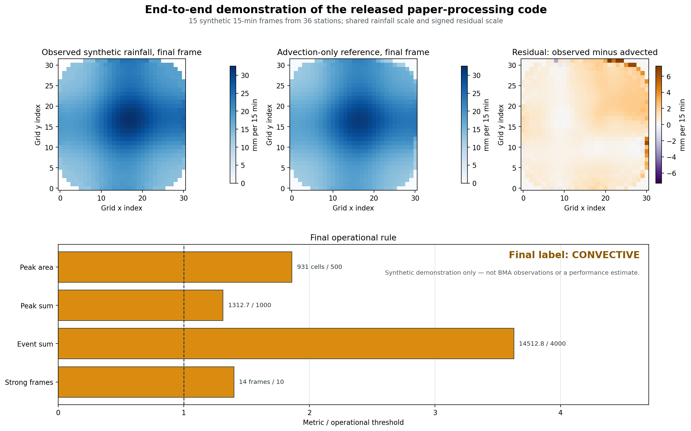

Clone and run
Clone the public repository, enter its directory, install the Python packages once, and run the demo.
git clone https://github.com/punpiti/egusphere-2026-1314-processing-code.git
cd egusphere-2026-1314-processing-code
python -m pip install -r requirements.txt
bash example/run_demo.shAlready downloaded the ZIP or cloned the repository? Enter the directory containing requirements.txt and start from the last two commands.
If the dependencies are installed in a particular environment, select its interpreter explicitly:
PYTHON_BIN=/path/to/python bash example/run_demo.shWhat the command runs
The synthetic generator only supplies unrestricted input. The scientific stages call the released paper-processing source files.
Checked result
Minor floating-point differences can occur across numerical-library or OpenCV versions, but the supplied event is intentionally designed to pass the documented rule.

Input format
The demo creates a Parquet event-window table in the same processing-input schema consumed by the gridding script.
| Column | Meaning |
|---|---|
time | Observation timestamp. |
stationid | Station identifier. |
rainfall | Rainfall accumulation per 15 min. |
rainfall_flag | Optional quality flag. |
Station metadata use id, nameShort, lat, and lon. See INPUT_SCHEMA.md and the human-readable templates under example/.
Outputs
Generated files are written beneath example/demo_output/:
demo_summary.png— visual overview.event_grid.nc— reconstructed rainfall field.flow_residual.nc— flow, advection, and residual arrays.frame_metrics.csv— frame-level metrics.final_label/all_storm_results_labeled.csv— final result.
Reproducibility boundary
This is a focused release of code directly connected to the paper. It excludes raw-data acquisition, restricted BMA observations and event tables, internal cache contents, batch/performance orchestration, machine-specific paths, logs, and unrelated project code.
The package supports inspection and execution of the method-specific processing path. Exact regeneration of the Bangkok results additionally requires observations and event-window definitions that cannot be redistributed. Full details are in README.md and SOURCE_PROVENANCE.md.